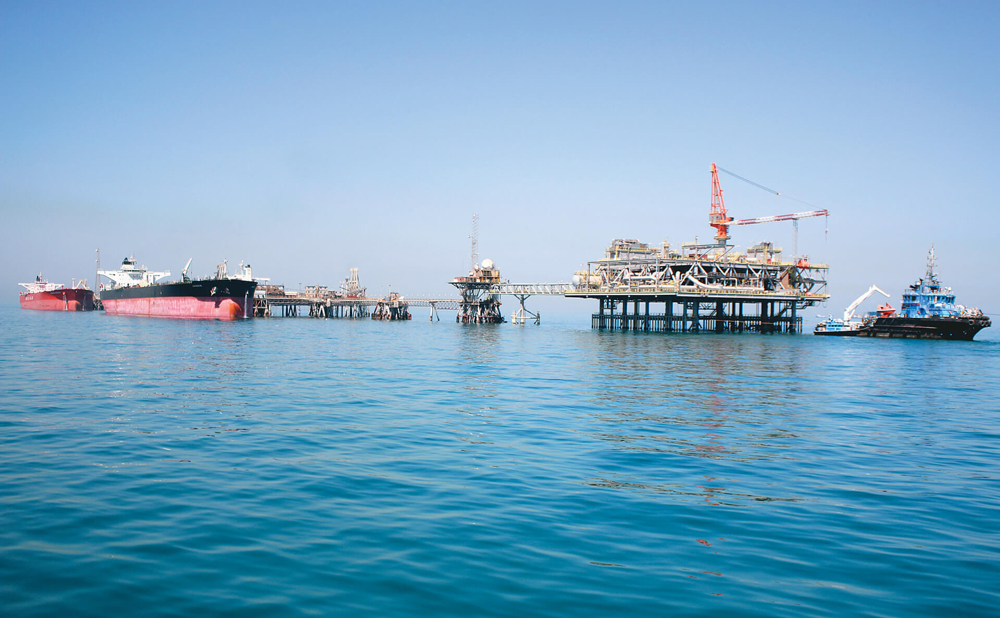
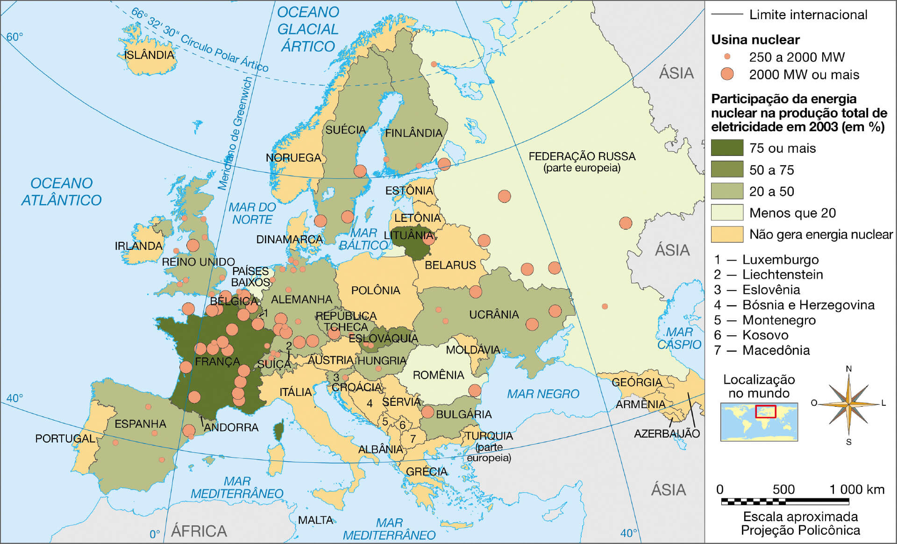
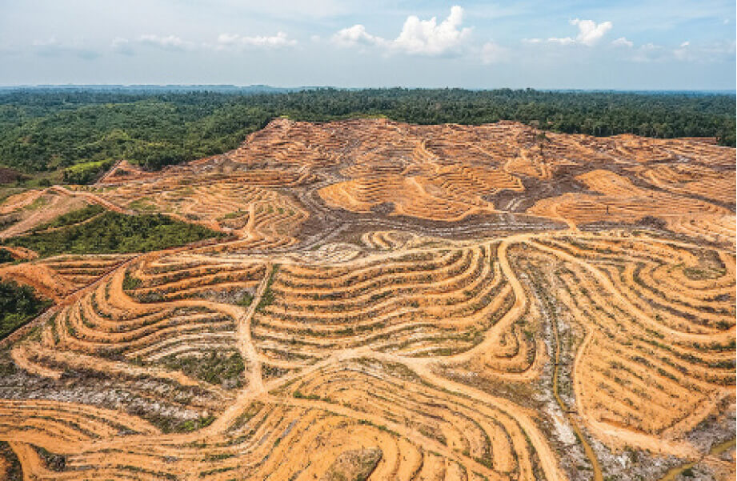
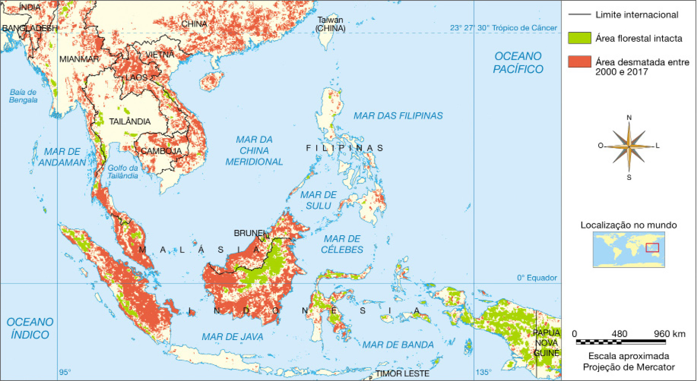

Unidade 05 Urbanização, industrialização e infraestrutura
Vista aérea de Recife, PE, 2014
Introdução
A urbanização está relacionada a transformações no espaço. Na imagem, você pode observar um centro urbano com construções antigas ao lado de outras mais modernas. Esses contrastes no espaço urbano de muitas cidades grandes e antigas do
Brasil são reflexos do processo de urbanização ao longo de muitas décadas. Trata-se de transformações que resultam de atividades humanas e do aprimoramento da tecnologia.
Durante o século XX, as grandes cidades brasileiras se tornaram centros de atração populacional em razão das vantagens que ofereciam. No entanto, também há desvantagens. Cite duas vantagens e duas desvantagens decorrentes de se viver
nas cidades grandes.
Objetivos
Compreender as questões referentes à urbanização e à industrialização no Brasil.
Entender como se deu o crescimento da população urbana.
Conhecer a classificação hierárquica da rede urbana brasileira.
Identificar os principais problemas socioambientais urbanos.
Conhecer os tipos de indústrias e os fatores que influenciam a localização das indústrias no Brasil.
Compreender as infraestruturas de transporte e energia estabelecidas no Brasil.
De acordo com dados da ONU, a população urbana mundial vem aumentando. Há 40 anos, apenas 39% das pessoas viviam em áreas urbanas; já em 2000, esse percentual passou para 50% e as estimativas são de que, em 2025, 63% estejam vivendo em
cidades, demonstrando a crescente urbanização mundial.
O processo de urbanização ocorre quando há concentração populacional em espaços urbanos e, consequentemente, redução da população em espaços rurais. Tal concentração é resultado de diferentes fatores ao longo da história, sendo a
industrialização um dos principais.
A industrialização pode ser vista como uma mudança social e econômica que ocorre quando a indústria aumenta a participação nas atividades produtivas dos espaços ocupados por ela. Esse fenômeno começou no século XVIII na Inglaterra com
a Revolução Industrial, quando a utilização de máquinas ampliou a produção de mercadorias.
No Brasil, a maior parte da população brasileira, por volta de 85%, vive na zona urbana, mas ainda há municípios onde ocorre o oposto. Observe o quadro a seguir.
O município de Acauã apresenta população rural bem maior do que a urbana.
Acauã, PI, 2010
Prefeitura Municipal de Acauã/PI
Como é possível perceber por meio da leitura do quadro, em alguns municípios brasileiros, a população que vive nas cidades é menor do que a que vive no campo. É importante lembrar que cidade e município não têm o mesmo significado.
Enquanto a cidade é a área urbanizada, sede do município, este é uma divisão administrativa de uma unidade da federação, que engloba tanto a área rural quanto a área urbana.
Há casos em que a zona urbana se expande por toda a área do município, que deixa de apresentar zona rural. Em outros, a zona urbana cresce em direção à área urbana de um município vizinho maior, formando grandes áreas conurbadas. A
conurbação ocorre, portanto, quando as áreas urbanas de dois ou mais municípios se juntam formando uma só grande malha urbana.
Imagem de satélite evidencia a conurbação entre as cidades de Goiânia, capital do estado de Goiás, e Aparecida de Goiânia, separadas pela Avenida Rio Verde, 2017
O Brasil urbano
A probabilidade de que você esteja lendo este livro, neste instante, em uma cidade é muito maior do que a de você estar na zona rural. Isso porque, como vimos, em nosso país, a população urbana compõe a maioria, próximo a 85% do total.
O gráfico ao lado mostra a evolução da urbanização brasileira. Esse processo é resultado de um período de transformações econômicas, políticas e sociais no decorrer das últimas décadas.
Distribuição da população rural e urbana brasileira
Nas primeiras décadas do século XX, a maior parte da população brasileira vivia na zona rural. Esse fato se relacionava ao desempenho das atividades econômicas, que estavam ligadas principalmente à zona rural. A partir da década de
1930, muitas mudanças começaram a ocorrer, principalmente no que se refere ao processo de industrialização do Brasil e à migração campo-cidade, que levava cada vez mais pessoas para os centros urbanos.
A Revolução Verde iniciada na década de 1960, como verificamos, provocou redução da demanda por mão de obra no campo. Da mesma forma, o aumento da concentração fundiária expulsou pequenos proprietários de imóveis rurais, que acabavam
se desfazendo de suas propriedades e migrando para as cidades.
Note que tanto os fatos relacionados às transformações nas cidades quanto as mudanças que ocorriam no campo favoreciam o deslocamento populacional de um local para o outro. O gráfico a seguir representa o crescimento da população de
Manaus (AM) entre 1940 e 2010.
Evolução da população de Manaus (AM)

Fonte: SINOPSE do Censo Demográfico 2010. Disponível em: <http://www.censo2010.ibge.gov.br/sinopse/index.php?dados=8>. Acesso em: 15 fev. 2017.
Observe que, entre 1950 e 1970, a população do município mais que dobrou. Muitos fatores podem explicar essa situação, entre eles destaca-se a criação da Zona Franca de Manaus em 1967, justamente quando o governo deu incentivos à
industrialização. Essa medida atraiu muitas indústrias para a cidade, o que, por sua vez, impulsionou a população a migrar em busca de empregos.
Processos mais ou menos similares aconteceram em diversas outras cidades brasileiras, evidenciando a mudança na configuração populacional, econômica e até mesmo social do país.
Crescimento da população urbana
Até a metade do século XX, a maior parte da população do Brasil era rural. Nesse período, havia no país apenas cerca de 52 milhões de habitantes. Já em 1970, nossa população somava aproximadamente 94,5 milhões de habitantes, dos quais
cerca de 53 milhões viviam nas cidades, ou seja, nesse ano a população urbana era superior à população total do país em 1950, apenas duas décadas antes.
Esses dados mostram principalmente que esse processo se deu em um ritmo muito acelerado naquela época, quando a população se tornou predominantemente urbana e houve um rápido crescimento urbano. O êxodo rural e a queda das taxas de
mortalidade nas cidades estão fortemente associados a esse crescimento.
Isso gerou inúmeros problemas urbanos, causados, em grande parte, por falta de estrutura e planejamento. Os grandes centros que começaram a surgir não tinham condições de absorver a grande quantidade de habitantes.
Recentemente, o ritmo desse crescimento vem diminuindo em decorrência da redução do volume dos movimentos de migração do campo para a cidade, bem como pela própria redução da taxa de crescimento populacional.
Atividades
Toque nas décadas existentes no quadro a seguir para ver a distribuição da população urbana e rural da Região Centro-Oeste.
Ano
Urbana
Rural
1960
995 171
1 683 209
1970
2 358 218
2 271 422
1980
4 950 203
2 053 312
1991
7 648 757
1 763 485
2000
10 075 212
1 541 533
2010
12 482 963
1 575 131
Fonte: SINOPSE do Censo Demográfico 2010. Disponível em: <http://www.censo2010.ibge.gov.br/sinopse/index.php?dados=8>. Acesso em: 15 fev. 2017.
Com base no gráfico e no quadro sobre a população da Região Centro-Oeste, responda às questões.
Houve crescimento da população rural em algum período? Em caso afirmativo, entre quais anos?
Houve redução da população urbana em algum período? Em caso afirmativo, entre quais anos?
Crie um título adequado para o gráfico e registre-o.
Rede e hierarquia urbana
A palavra “rede” pode ser utilizada em diferentes contextos. Um deles, muito usado atualmente, é o que se refere às redes sociais. Estas conectam e integram as pessoas, aproximando-as virtualmente. Não muito diferente disso, a rede
urbana é a ligação formada pelas cidades que se relacionam e criam vínculos umas com as outras, interligadas por meio das vias de transporte e comunicação.
Em decorrência de características particulares, há cidades que acabam centralizando determinados serviços e exercendo maior influência sobre as demais. De acordo com essa relação, podemos classificar as cidades que compõem a rede
urbana em uma hierarquia com diferentes categorias. Assim, para facilitar nossos estudos, vamos utilizar as três principais delas, das mais influentes às menos: metrópoles, capitais regionais e centros sub-regionais. Cada uma dessas
categorias apresenta uma característica relacionada principalmente à importância socioeconômica.
Metrópoles
São as principais cidades de determinado território ou país. Em razão da grande diversidade de atividades econômicas que apresentam, estabelecem forte influência sobre as demais cidades no entorno, funcionando como polos econômicos,
que concentram os centros decisórios. Existem diferentes níveis de metrópoles. No Brasil, temos a grande metrópole nacional, São Paulo (SP); as metrópoles nacionais, como Rio de Janeiro (RJ) e Brasília (DF); e demais metrópoles como
Manaus (AM), Belém (PA), Fortaleza (CE), Recife (PE), Salvador (BA), Belo Horizonte (MG), Curitiba (PR), Goiânia (GO) e Porto Alegre (RS). Nos arredores dessas metrópoles, é comum ocorrer o fenômeno da conurbação, o qual se dá quando
uma cidade emenda sua malha urbana com a de outras cidades próximas.
A metrópole de São Paulo é classificada por alguns estudiosos como uma megacidade, por ter mais de 10 milhões de habitantes, e uma cidade global, ainda que com menor influência do que outras, como Nova Iorque ou Londres. As cidades
globais concentram sedes de bancos ou empresas que atuam em diversos países, exercendo influência em escala internacional.
Vista aérea de Belém, PA, metrópole no norte do país
Apesar de estarem na área de influência das metrópoles, as cidades consideradas capitais regionais apresentam possibilidades de assumir certa influência em escala regional, concentrando alguns serviços como de saúde ou shopping
centers. Exemplos: Florianópolis (SC), Porto Velho (RO), Rio Branco (AC), Juazeiro do Norte (CE) e Cuiabá (MT).
Vista de cima da cidade de Juazeiro do Norte, CE, com a Chapada do Araripe ao fundo, 2010
Pulsar Imagens/Delfim Martins
Centros sub-regionais
Apresentam uma área de influência menor do que a das categorias superiores, mas com pequena centralização das atividades econômicas de seu entorno. Exemplos: Foz do Iguaçu (PR), Assis (SP), Anápolis (GO), Cáceres (MT), Cruzeiro do Sul
(AC) e Irecê (BA).
Vista aérea da área central de Foz do Iguaçu, PR, 2015
Pulsar Imagens/Ernesto Reghran
Observe, no mapa a seguir, onde se localizam as metrópoles e capitais regionais do país.
Brasil: metrópoles e capitais regionais (2007)
Luciano Daniel Tulio
Fonte: REGIÕES de influência das cidades. Disponível em: <http://biblioteca.ibge.gov.br/visualizacao/livros/liv40677.pdf>. Acesso em: 7 fev. 2017. Adaptação.
Cartografar
Volte a observar o mapa das metrópoles e capitais regionais brasileiras e, com base nele, responda às questões.
O município onde você mora se encaixa em alguma das duas categorias mapeadas? Em caso positivo, qual seria? Em caso negativo, há algum município no entorno em alguma das categorias?
Em qual região do Brasil há maior quantidade de metrópoles e capitais regionais? E em qual há menor quantidade?
Problemas sociais e ambientais urbanos
Ao concentrar a maior parte da população, as cidades passam a reunir também grande parte dos problemas ambientais e sociais. Tais problemas afetam de forma direta a vida das pessoas.
As grandes aglomerações geram a necessidade de uma rede de serviços, infraestrutura e planejamento proporcional à quantidade de habitantes. Contudo, em geral, como seu crescimento foi, muitas vezes, desordenado, as cidades não estão
preparadas para oferecê-los. A seguir, vamos verificar mais informações sobre alguns dos principais problemas urbanos do Brasil.
Desemprego
Um grave problema da maioria das cidades brasileiras, grandes ou pequenas, é a baixa oferta de postos de trabalho. O desemprego é um dos fatores relacionados ao crescimento das ocupações irregulares e invasões, que ocorrem quando as
pessoas se apropriam, de forma gradual ou imediata, de uma área inadequada para a habitação, ou então de terrenos de propriedade estatal ou privada. O desemprego, assim como outros fatores, ligados, por exemplo, à questão das moradias
(o que inclui a especulação imobiliária), está associado ao aumento no número de pessoas marginalizadas que vivem nas ruas.
Trabalhadores desempregados fazem fila para concorrer a uma vaga de emprego em rede de supermercado de Curitiba, PR, 2016
Fotoarena/La Imagem/Rodolfo Buhrer
Favelização
A falta de moradia, chamada déficit habitacional, também é grave nos grandes centros urbanos. Em decorrência da remoção de famílias que vivem em locais onde há risco de acidentes, é necessário criar espaços que obedeçam a padrões
ambientais e de saúde, nos quais devem ser construídas moradias. Isso amplia a demanda por áreas e capital para investimento. De acordo com o IBGE, em 2010 havia 11,4 milhões de pessoas em “aglomerados subnormais”, como são denominadas
as favelas.
A favelização é um processo que ocorre quando há crescimento do número de pessoas que vivem de forma irregular em moradias precárias e impróprias. Trata-se de zonas urbanas pobres e de pouca infraestrutura presentes em muitas cidades
do país. Normalmente, são áreas que apresentam qualidade de vida mais baixa do que as áreas centrais. Em virtude da pouca presença do poder público, por meio de serviços como segurança e infraestrutura, há casos em que grupos criminosos
controlam as favelas ou partes delas, à revelia da população trabalhadora desses bairros. Contudo, cada vez mais há favelas bem estruturadas e já bastante assistidas pelo Estado.
Área com risco de desabamento em favela de São Paulo, SP, 2012
Folhapress/Vinicius Pereira
Poluição
De acordo com o Dicionário Aurélio, poluição é “contaminação e consequente degradação do meio natural causadas por agentes químicos, detritos domésticos, industriais, etc.”. Existem diversos tipos, mas os mais comuns nas
grandes cidades são a poluição atmosférica, a hídrica, a visual e a sonora.
A poluição atmosférica está relacionada à emissão de gases poluentes, como aqueles que provocam o efeito estufa antrópico. As chuvas ácidas também podem ser causadas por esse tipo de poluição. Elas acontecem quando os gases poluentes
reagem na atmosfera e se misturam com as nuvens, formando ácidos que acabam diluídos. Essas nuvens se precipitam sobre as cidades, podendo ocorrer também na zona rural, quando levadas pelo vento.
A poluição hídrica se dá principalmente em razão da falta de coleta de resíduos e de maus hábitos de pessoas que não dão o destino correto ao lixo, jogando-o nas ruas ou em rios, além de problemas de saneamento básico, como ausência ou
deficiência na captação e no tratamento do esgoto.
Quanto à poluição visual e sonora, são tipicamente urbanas. A primeira ocorre quando há um exagero na quantidade de anúncios ou painéis espalhados a ponto de causar desconforto às pessoas. Do mesmo modo, a poluição sonora é produzida
pelo excesso de barulho provocado por fábricas, automóveis, aviões, etc., causando irritabilidade e estresse, além de problemas auditivos.
Chaminés da Companhia Siderúrgica Nacional (CSN) emitem gases poluentes em Volta Redonda, RJ, 2014
Pulsar Imagens/Luciana Whitaker
+ Zoom
Outras consequências do crescimento acelerado das cidades brasileiras no século XX foram a grande remoção de áreas verdes, a impermeabilização do solo (asfaltos e calçadas), o aumento das construções e circulação de veículos. Tais
medidas resultaram na formação das ilhas de calor, áreas dentro das grandes cidades que, em razão da ausência de cobertura vegetal, sofrem um aumento significativo na temperatura se comparadas às áreas menos centrais. Essa situação
pode agravar o desconforto térmico em dias muito quentes.

Mateus Lins. 2017. Digital.
Fonte: CHRISTOPHERSON, Robert W. Geossistemas: uma introdução à Geografia Física. 7. ed. Porto Alegre: Bookman, 2012. p. 108.
O fenômeno das ilhas de calor ocorre porque as superfícies absorvem e liberam calor (se aquecem e se resfriam) em velocidades diferentes. Portanto, as áreas impermeabilizadas o captam de modo mais rápido, diferentemente das áreas
verdes. Onde há impermeabilização do solo e muitas construções, a concentração de calor é maior, havendo uma tendência de a temperatura ser mais alta do que nas áreas afastadas.
Olhar geográfico
Responda às questões a seguir.
Analise o trecho da letra da canção A cidade a seguir.
A cidade
O sol nasce e ilumina as pedras evoluídas
Que cresceram com a força de pedreiros suicidas
[...]
E a cidade se apresenta centro das ambições
[...]
Coletivos, automóveis, motos e metrôs
Trabalhadores, patrões, policiais, camelôs
A cidade não para, a cidade só cresce
O de cima sobe e o de baixo desce
[...]
SCIENCE, Chico. A cidade. In: NAÇÃO ZUMBI. Da lama ao caos. Chaos, 1994.
a) O que seriam as “pedras evoluídas” que crescem?
b) Cite uma frase (linha) da canção que mencione um problema urbano.
O que é rede urbana?
O que são metrópoles?
O que são ilhas de calor?
Enumere fatores que contribuíram para que as grandes cidades brasileiras apresentassem diversos tipos de problemas urbanos.
Indústria no Brasil
A indústria corresponde ao setor secundário da economia. É responsável pela transformação de matérias-primas para a produção de mercadorias. De acordo com suas características em relação à forma de produção e às mercadorias produzidas,
podemos classificar a indústria em três categorias.
Indústrias de base: responsáveis pela transformação de matérias-primas e produtos que, em geral, passarão por outros processos em outras indústrias.
Trabalhadores manuseiam ferro fundido em moldes para produção de peças em Cambé, PR, 2016
Pulsar Imagens/Ernesto Reghran
Indústrias intermediárias ou de bens de capital: produzem equipamentos, máquinas e materiais que serão utilizados por outras indústrias.
Trabalhador na linha de montagem de motores de automóveis em Camaçari, BA, 2014
Futura Press/João Souza
Indústrias leves ou de bens de consumo: como o nome sugere, nesse tipo de indústria, são produzidos os bens que nós, consumidores, utilizamos, sendo possível classificá-los em bens de consumo duráveis (carros,
eletrodomésticos) e bens de consumo não duráveis (alimentos, medicamentos).
Esteira de produção em fábrica de calçados em Novo Hamburgo, RS, 2016
Pulsar Imagens/Luciana Whitaker
A participação do setor industrial na economia nacional se ampliou principalmente após a década de 1930. Naquele período, a industrialização veio como uma alternativa econômica para superar os problemas causados pela grande crise
mundial de 1929, que afetou diretamente a economia cafeeira no país.
Outra característica da industrialização brasileira foi a busca por produzir internamente o que antes era importado de outros locais, a estratégia de “substituição de importações”. Essa estratégia é o oposto daquela adotada por países
asiáticos como China e Coreia do Sul, por exemplo, os quais privilegiaram a produção para competir no mercado externo, para exportação, isto é, adotavam um modelo de industrialização denominado “plataformas de exportação”.
A maior parte da produção industrial brasileira está concentrada nas cidades. Em 2015, a atividade industrial gerou cerca de R$ 1,122 trilhão, o que corresponde a aproximadamente 19,2% do PIB do Brasil. Apesar de parecerem números
expressivos, nos últimos anos, por conta das crises econômicas e políticas pelas quais o país vem passando, alguns setores da economia têm apresentado sucessivas quedas, como é o caso da indústria, que, em 2015, passou por uma redução
de 8,4% na produção em relação ao ano anterior, segundo dados do IBGE. O setor industrial ainda foi responsável pela ocupação de 13,9% da População Economicamente Ativa (PEA) em 2015.
População Economicamente Ativa se refere a pessoas entre 10 e 65 anos de idade (critério que muda de país para país, já que, em outras nações, a idade mínima computada é maior) ocupadas ou desocupadas (mas que
estejam em busca de emprego) em alguma atividade econômica. Cabe ressaltar que, de acordo com o Estatuto da Criança e do Adolescente, é proibido que menores de 16 anos trabalhem, exceto na condição de aprendizes, a partir dos 14 anos.
Os menores com mais de 16 anos podem trabalhar, desde que não sejam atividades perigosas ou insalubres, isto é, atividades que coloquem em risco sua saúde ou segurança.
Para produzir, as indústrias necessitam de matéria-prima e geração de energia. Consequentemente, toda atividade industrial implica algum tipo de impacto ambiental, seja de maneira direta, seja indiretamente.
No entanto, a atual preocupação em preservar o ambiente e reduzir os problemas decorrentes das atividades humanas vem levando algumas indústrias, por imposição de leis ou voluntariamente, a adotar ações que minimizem ou compensem esses
impactos. São medidas como redução de consumo de energia, construção de prédios sustentáveis, promoção de condições mais justas aos trabalhadores, tratamento mais adequado aos animais, etc.
Ícone do certificado Forest Stewardship Council
Para assegurar que as empresas realmente atendam a tais medidas, foram criados os certificados ambientais. Um exemplo é o Forest Stewardship Council (FSC), concedido a indústrias dos setores madeireiro e de móveis que utilizam métodos
sustentáveis de produção, desde o início até o fim de seus processos.
Localização espacial das indústrias no Brasil
A distribuição das indústrias brasileiras revela uma forte tendência para a concentração. Tal tendência é resultado de um processo histórico que envolve diferentes situações. Observe o mapa.
Distribuição das indústrias brasileiras (2013)
Talita Kathy Bora
Fonte: IBGE. Atlas geográfico escolar. 7. ed. Rio de Janeiro, 2016. p. 136. Adaptação.
Conforme você estudou, até a década de 1930, a economia brasileira era essencialmente agrícola, destacando-se a produção cafeeira. São Paulo, por ser o maior produtor de café, havia se tornado a principal economia do país. Assim,
apresentava as melhores redes de infraestrutura estabelecidas para escoar a produção do interior até o porto.
Todos esses elementos contribuíram para que o estado fosse o principal destino das indústrias, resultando em uma grande concentração destas na Região Sudeste. A instalação de siderúrgicas no estado do Rio de Janeiro, motivada pela
proximidade com Minas Gerais, produtor de minerais metálicos, também colaborou para essa concentração. Atualmente, mais da metade da produção industrial do Brasil se encontra no Sudeste, como é possível analisar por meio do gráfico.
Concentração industrial do Brasil (2015)

Fonte: ESTATÍSTICAS do cadastro central de empresas – 2015. Disponível em: <https://biblioteca.ibge.gov.br/visualizacao/livros/liv100618.pdf>. Acesso em: 3 jan. 2018.
Além da infraestrutura de transporte, que veremos a seguir, diferentes fatores influenciam na escolha da localização das indústrias. Não há um mais importante do que outro, mas existem elementos que incentivam essa escolha. Vamos
analisar alguns deles.
Mercado consumidor: a proximidade em relação aos consumidores, sejam eles os consumidores finais, sejam outras indústrias, amplia o comércio e diminui o custo com o transporte.
Mão de obra: a disponibilidade de força de trabalho qualificada e o menor custo desta influenciam significativamente na localização industrial, levando muitas empresas a optar por investir em regiões ou até mesmo
países com oferta de mão de obra barata.
Matéria-prima: a disponibilidade e a proximidade em relação à matéria-prima é outro fator atrativo, principalmente para indústrias que atuam no início do processo produtivo (indústrias de base), pois movimentam
volumes mais significativos desses recursos.
Incentivos governamentais: a oferta de incentivos por parte dos governos atrai muitas indústrias, uma vez que, ao propor esse tipo de benefício, os governos reduzem ou eliminam impostos, além de oferecer
vantagens, como terrenos para sua construção e facilidades com meios de transporte. Conforme verificamos, a Zona Franca de Manaus, que ultrapassa os limites do Amazonas, é um exemplo da ação do governo federal com o intuito de
promover a industrialização. Nessa área, as empresas têm isenção de impostos até 2073. Em alguns casos, porém, os incentivos governamentais provocam disputas entre estados que, para receber indústrias, oferecem diversos
benefícios, gerando a chamada “guerra fiscal”.
Olhar geográfico
Analise a seguinte situação: uma importante executiva de determinada empresa estadunidense estava interessada em instalar uma indústria de bens de consumo no Brasil. Sua equipe de consultores avaliou diferentes fatores que
influenciam na localização das indústrias e sugeriu dois estados: Amazonas e São Paulo.
Considerando que as sugestões levaram em conta critérios geográficos diferentes, responda às questões.
a) Quais fatores justificam a escolha do estado de São Paulo?
b) Que fatores justificam a escolha do estado do Amazonas?
Compare os mapas a seguir e registre as semelhanças encontradas.
Brasil: metrópoles e capitais regionais (2007)
Luciano Daniel Tulio
Fonte: REGIÕES de influência das cidades. Disponível em: <http://biblioteca.ibge.gov.br/visualizacao/livros/liv40677.pdf>. Acesso em: 7 fev. 2017. Adaptação.
Distribuição das indústrias brasileiras (2013)

Talita Kathy Bora
Fonte: IBGE. Atlas geográfico escolar. 7. ed. Rio de Janeiro, 2016. p. 136. Adaptação.
Infraestrutura
É o conjunto de elementos e instalações necessários ao andamento das atividades humanas. Ela é construída com base nos recursos tecnológicos e econômicos disponíveis e, por isso, entre os países mais e menos desenvolvidos, há grande
diferença na qualidade e na quantidade de infraestrutura.
É necessário renovar e ampliar a infraestrutura de um local constantemente de acordo com os crescimentos populacional e econômico. Trata-se de um fator determinante para o desenvolvimento de um país, pois promove o aumento da
produtividade, do comércio e do consumo dos produtos, favorecendo a movimentação da economia.
Até a década de 1990, as principais obras no Brasil eram realizadas quase exclusivamente pelo governo. Depois disso, as privatizações e as parcerias entre os setores público e privado possibilitaram que empresas particulares passassem
a atuar em importantes esferas ligadas à infraestrutura, ampliando a cobertura de serviços básicos, principalmente do setor de telefonia.
Essas empresas dispunham de capital para investir e favoreceram o acesso à tecnologia necessária à modernização do setor no país. Muitas delas eram empresas multinacionais originadas em países mais desenvolvidos nesse campo.
Transporte
O setor de transportes também é fundamental para o desenvolvimento da economia de um país, pois os produtos e as pessoas precisam circular com facilidade e a custo baixo pelo território. As modalidades de transporte são: rodoviária,
ferroviária, aquaviária e aérea.
Pulsar Imagens/Hans Von Manteuffel
Vista aérea do Aeroporto Internacional do Recife, PE, 2015
O transporte rodoviário é o mais utilizado no Brasil, o que ocasiona algumas dificuldades de infraestrutura, pois, além de ser o mais caro para longas distâncias, está associado a diversos acidentes, muitos deles fatais. Essa
predominância é considerada fruto do planejamento dos governos que promoveram a industrialização entre 1950 e 1970. Nesse período, houve muitos incentivos para o transporte rodoviário em razão do crescimento da indústria automobilística
no país. Em contrapartida, as outras modalidades de transporte, como a ferroviária e a hidroviária, foram perdendo investimentos.
Programa de Aceleração do Crescimento
Vista aérea do porto de Santos, SP, 2014
O transporte aquaviário é o que apresenta menor custo operacional e consome menos energia, indicado principalmente para a movimentação de grandes quantidades de cargas. Engloba o transporte fluvial (rios), o marítimo (mar) e o lacustre
(lagos). Apesar de ser considerado eficiente e barato, sua participação é de apenas 15% do transporte de cargas no Brasil.
Programa de Aceleração do Crescimento
Trecho da ferrovia Ferronorte, em Rondonópolis, MT, 2013
Vista aérea da BR-116, em Porto Alegre, RS, 2016
Programa de Aceleração do Crescimento
Brasil: transporte ferroviário e hidroviário (2014)
Talita Kathy Bora
Fonte: IBGE. Atlas geográfico escolar. 7. ed. Rio de Janeiro, 2016. p. 143. Adaptação.
Brasil: rodovias (2014)
Talita Kathy Bora
Fonte: IBGE. Atlas geográfico escolar. 7. ed. Rio de Janeiro, 2016. p. 143. Adaptação.
No início deste século, o crescimento econômico ocorrido no país ampliou o uso do transporte aéreo, o mais rápido meio de transporte, com uso mais destinado ao transporte de passageiros do que de cargas. Os brasileiros passaram a
utilizar o avião com mais frequência. Além disso, o Brasil é destino de importantes eventos esportivos, culturais e de negócios com repercussão mundial. Dessa forma, são necessários investimentos nos aeroportos do país. Recentemente,
sua administração também vem sendo concedida a empresas do setor privado, desonerando o governo, isto é, desobrigando-o de fazer esses investimentos.
Energia
Tudo o que é produzido utiliza energia. Assim, seu custo é um fator que influi diretamente sobre o preço daquilo que consumimos. Com energia mais barata, reduz-se o valor do processo produtivo, tornando mais acessível o custo de vida
para a população em geral e proporcionando maior competitividade ao país em mercados internacionais.
Quando pensamos na palavra “energia”, logo nos lembramos de energia elétrica, que contempla boa parte das tarefas do nosso cotidiano, fazendo funcionar os aparelhos domésticos e eletrônicos. No entanto, ela é muito mais abrangente e
envolve grande quantidade de tipos e de fontes. Por exemplo: boa parte da energia elétrica presente em nossas casas é gerada em hidrelétricas, as quais utilizam a água dos rios para produção. Além da hidráulica, existem outras fontes de
energia em nosso país, formando a matriz energética brasileira, a qual está representada no gráfico a seguir.
Geração elétrica por fonte no Brasil (2016)
Fonte: ANUÁRIO estatístico de energia elétrica 2016. Disponível em: <http://www.epe.gov.br/AnuarioEstatisticodeEnergiaEletrica/Forms/Anurio.aspx>. Acesso em: 18 fev. 2017.
De acordo com o gráfico, são sete as fontes de energia mais utilizadas no Brasil, classificadas de acordo com sua capacidade de renovação. O gás natural, o carvão mineral e o petróleo constituem fontes energéticas não renováveis, pois
se originaram em processos naturais que levaram milhares de anos para ocorrer. Portanto, são finitas, assim como os elementos radioativos usados nas usinas nucleares.
A energia nuclear produzida no país vem de uma central nuclear denominada Almirante Álvaro Alberto, localizada na cidade de Angra dos Reis, estado do Rio de Janeiro. Nela, há duas unidades em funcionamento e uma terceira em construção,
chamadas Angra I, II e III. Enquanto Angra I está em operação comercial desde 1985, Angra II está desde 2000. A construção de Angra III, por uma série de razões, foi paralisada. Considerando a quantidade de energia que produzem, ocupam
uma área relativamente pequena. Contudo, no mundo todo, o receio de acidentes nucleares sempre coloca esse tipo de fonte como potencialmente perigosa.
Quase 62% da energia produzida no Brasil provém de hidrelétricas, que usam fonte renovável, a água, entretanto causam impactos ambientais, como a inundação de extensas áreas. Por isso, a construção de novas usinas normalmente é cercada
de polêmicas, como no caso de Belo Monte, que você estudou anteriormente. O mapa ao lado mostra a localização das principais usinas hidrelétricas do país.
Localização das principais usinas hidrelétricas brasileiras (2008)
Marilu de Souza
Fonte: ATLAS de energia elétrica do Brasil. Disponível em: <http://www.aneel.gov.br/arquivos/PDF/atlas3ed.pdf>. Acesso em: 4 dez. 2017. Adaptação.
Conexões
Energias renováveis no Brasil
As fontes renováveis são aquelas que podem ser produzidas e repostas pela natureza em curto prazo. Um exemplo é a energia eólica, que aproveita o movimento do ar atmosférico, o vento. Entretanto, mesmo a energia eólica apresenta
restrições, já que muitas áreas não reúnem condições para o seu uso, como a velocidade mínima do vento, por exemplo. De acordo com a Organização Mundial de Meteorologia (OMM), somente cerca de 13% da superfície terrestre apresenta
condições ideais de velocidade do vento.
No que se refere ao impacto ambiental, as aves migratórias atingidas pelos aerogeradores também são uma preocupação.
Existem alguns projetos desenvolvidos em território nacional, principalmente em estados da Região Nordeste, como Ceará e Rio Grande do Norte, além do Rio Grande do Sul, para o aumento da produção eólica.
O uso de fontes de energia renováveis e limpas, como a eólica, vem crescendo nas últimas décadas, porém elas ainda representam menos de 20% de toda a matriz energética mundial, embora essa taxa esteja crescendo. No Brasil, essa fonte
de energia gerou 3,7% da eletricidade produzida em 2015.
O desenvolvimento socioeconômico está, muitas vezes, atrelado à existência e ao bom funcionamento de diversos tipos de infraestrutura. Assim, o Estado assume para si a administração e a manutenção desta na esfera municipal, estadual ou
federal. Um serviço público em geral será de responsabilidade do Estado. Em alguns casos, o setor privado pode receber uma concessão e prestá-lo por determinado período, o qual varia conforme características particulares dos casos.
Dessa forma, a prestação de um serviço público – regulada pelo governo – também pode ser realizada por empresas privadas. No seu dia a dia, você utiliza vários serviços públicos que somente são possíveis em virtude de grandes
investimentos em obras de infraestrutura. Considerando essas questões, faça o que se pede.
Registre dois serviços públicos que você utiliza em seu cotidiano.
Escolha um dos serviços registrados, faça uma pesquisa sobre ele e escreva as informações solicitadas.
a) Tipo do serviço público
b) É prestado pelo setor público ou privado?
c) Nome da empresa
Destaque alguns dados sobre a empresa e o serviço por ela prestado que você considerou relevante em sua pesquisa.